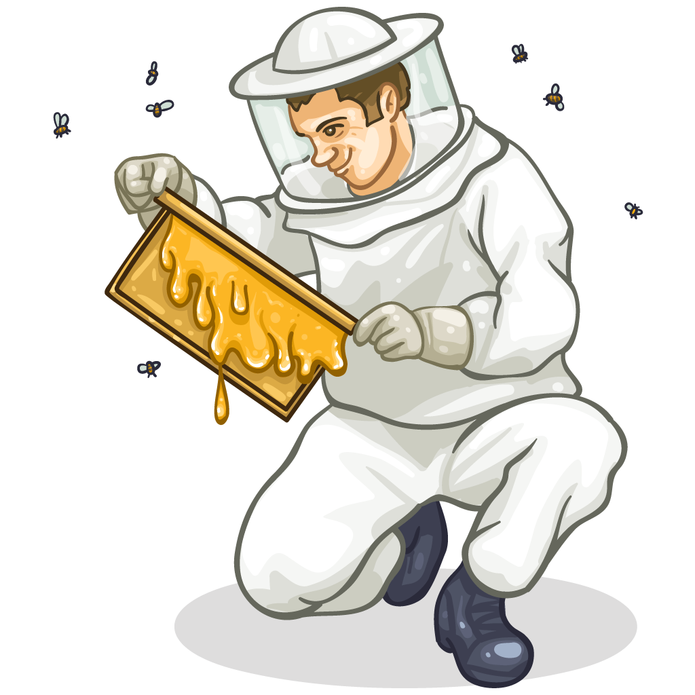

Welcome to Honney Bee

This place was once just a dream that transformed into an project that just made sense. It became so much more than a school project or store.
Now, Honney Bee is a commercial honey farm, internet store and blog. Here you can learn a lot of interesting things about bees and buy their honey.
WE’RE ALWAYS HERE TO HELP YOU.